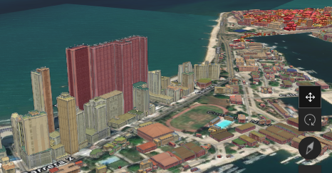
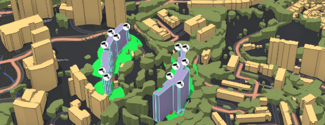
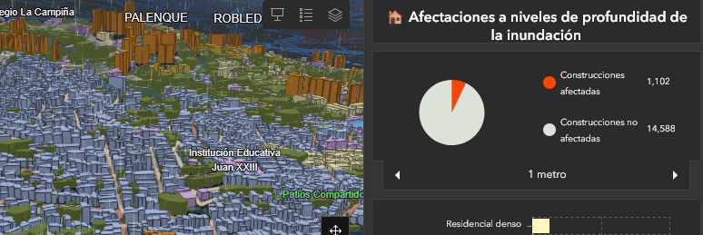
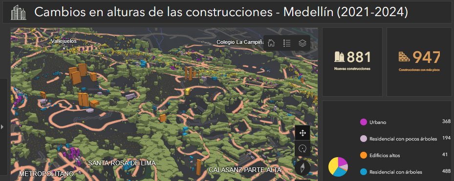
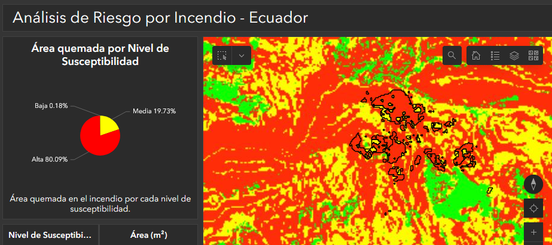
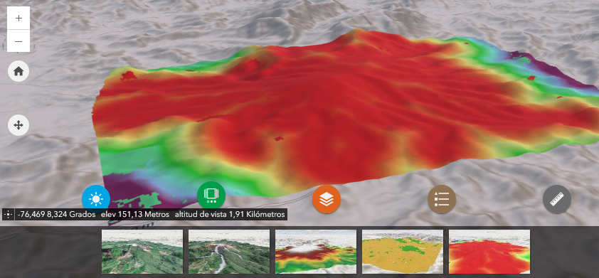
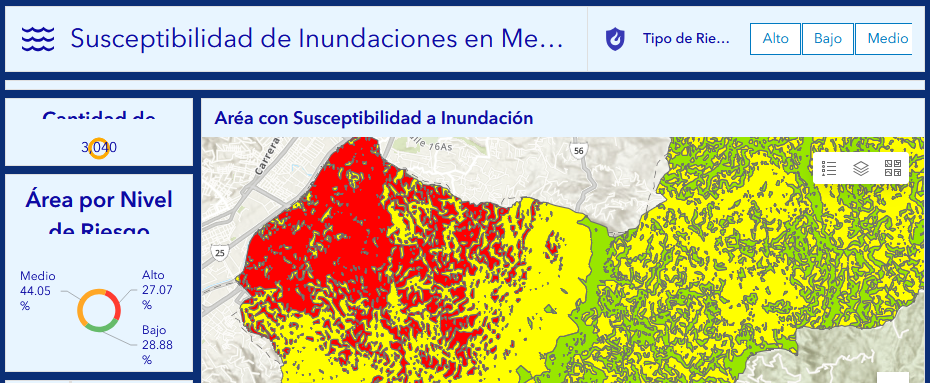
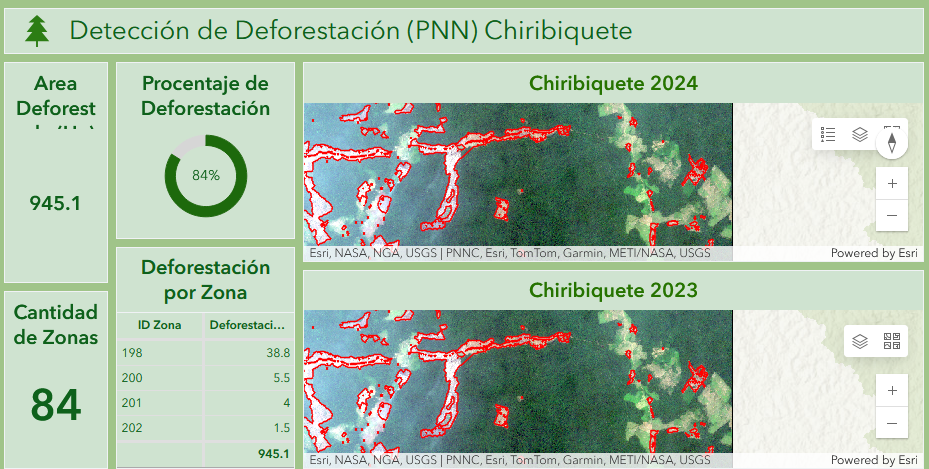

Radiacion solar Cartagena
Analisis de radiacion solar anual por edificacion con datos 3D y DEM para identificar zonas optimas para paneles solares.
Soluciones ArcGIS
Exploraciones y casos aplicados en administracion del territorio, gestion de riesgos y recursos naturales.


Analisis de radiacion solar anual por edificacion con datos 3D y DEM para identificar zonas optimas para paneles solares.

Evaluacion de cobertura visual de camaras de seguridad en Medellin considerando edificaciones, vegetacion y topografia.

Simulacion de inundaciones a distintos niveles de profundidad con segmentacion de construcciones por tipo.

Analisis de dinamica urbana en Medellin entre 2021 y 2024 para identificar nuevas construcciones y cambios de altura.

Susceptibilidad a incendios forestales en Ecuador, con clasificacion por niveles de ocurrencia y delimitacion de riesgo potencial.

Visor 3D con zonificacion de vulnerabilidad frente a actividad volcanica y soporte de story map complementario.

Indicadores topograficos y drenajes para clasificar riesgo de inundacion en Medellin.

Analisis multitemporal de imagenes Planet para detectar perdida de cobertura vegetal en Chiribiquete.